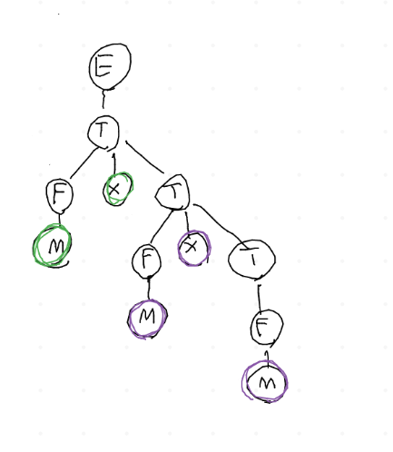

Grammatiche formali, 26/10/22
Table of contents
1 Introduzione
Per prima cosa, viene introdotto il concetto di grammatiche equivalenti:
\(\blacktriangleright\) Due grammatiche sono equivalenti se generano lo stesso insieme di stringhe, quindi se definiscono lo stesso linguaggio.
Lo scopo del programmatore è quindi quello di scegliere una
grammatica che possa agevolare il compito del parser di
interpretare le sequenze di token.
Esempio di grammatiche equivalenti: \(\downarrow\)
1.1 G1
1.2 G2
Per rendersene conto, basta fare delle prove semplici, ad esempio convertire \(num \times (num + num)\)
2 Parse Tree
Il Parse Tree è una struttura dati che descrive il processo di derivazione che porta alla stringa finale, come quello in figura \(\downarrow\)
Una visita DFS in order permette di "leggere" la sequenza
finale di interesse, le cui parti sono situate nelle foglie dell'albero.
3 Ambiguità di una Grammatica
Diversi processi di derivazione (usando una stessa grammatica) possono portare alla costruizione di Parse Tree differenti. In questo caso, la grammatica è detta ambigua.
\(\blacktriangleright\) Una grammatica si dice ambigua se almeno una frase ammette diversi Parse Tree.
Questo non sarebbe un problema per quanto visto fino ad adesso, ma bisogna pensare al parse tree come un'anticipazione del significato della stringa". Ciò significa che alcuni alberi potrebbero risultare "sbagliati" dal punto di vista interpretativo. Ad esempio: \(\downarrow\)
\begin{equation} num \times num + num \end{equation}in questo caso, l'albero di sinistra "sembra scorretto", perchè suggerisce l'esecuzione dell'addizione (che si trova nel blocco più basso) rispetto all'esecuzione della moltiplicazione, che invece ha la precedenza. Una grammatica non ambigua, al contrario, forza l'esistenza di una sola derivazione, quindi la costruzione di un solo albero!
4 Derivazioni canoniche
Un processo utile per aiutare la "regolarizzazione" di una grammatica, è quello di definire una specifica derivazione da utilizzare. Solitamente si hanno 2 scelte:
- Derivazione canonica destra;
- Derivazione canonica sinistra;
\(\blacktriangleright\) Una derivazione canonica destra/sinistra prevede ad ogni passo la riscrittura del simbolo non terminale più a destra/sinistra
In questo modo, dato un parse tree, si riesce sempre a risalire al processo di derivazione utilizzato!
5 Altri problemi
Altri problemi che possono ostacolare il ruolo del parser sono:
- Cicli: \(A \overset{+} \Rightarrow A\);
- Left recursion: \(A \overset{+} \Rightarrow A\alpha\);
- Prefissi comuni; \(A \rightarrow \alpha\beta_{1}\) e \(A \rightarrow \alpha\beta_{2}\)
I problemi riguardo le precedenze di operatore prima sollevati
possono essere risolti aggiungendo dei "layer" alla grammatica,
secondo i livelli di precedenza. Ad esempio:
Per ottenere la solita espressione \(num \times num + num\) si può usare soltanto una specifica serie di derivazioni, che oltretutto produce un risultato facilmente interpretabile dal parser. Se si prova a seguire un'altro ordine, ci si blocca subito!
Se usassimo \(T \rightarrow F \times T\) invece di \(T \rightarrow T \times F\),
per ottenere \(num \times num \times num\), si otterrebbe un'albero come
in figura, che suggerisce un'associatività delle operazioni a destra,
quando invece nell'aritmetica si svolgono prima le operazioni sulla
sinistra quando esse sono sullo stesso livello di priorità.

6 Esercizi svolti
- Esercizio 1, slide 38: fornire una grammatica libera per l’insieme delle stringhe costituite da parentesi correttamente bilanciate;
E' interessante notare il fatto che non esiste alcun automa che possa riconoscere questo tipo di linguaggio, dato che richiede la memorizzazione di sequenze di parentesi.
- Esercizio 2, slide 38: Fornire una grammatica libera per il linguaggio \(L_{1,2}=\{a^nb^{2n} | n>=0\}\)
In questo modo, ogni volta che si aggiunge una \(a\) all'inizio, si aggiungono 2 \(b\) alla fine, creando il linguaggio giusto.